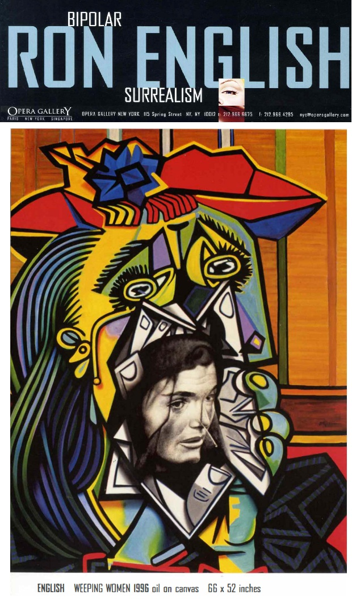
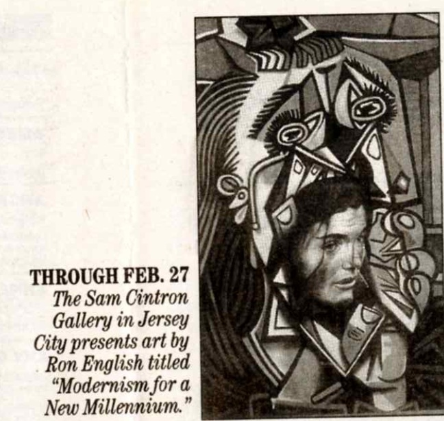
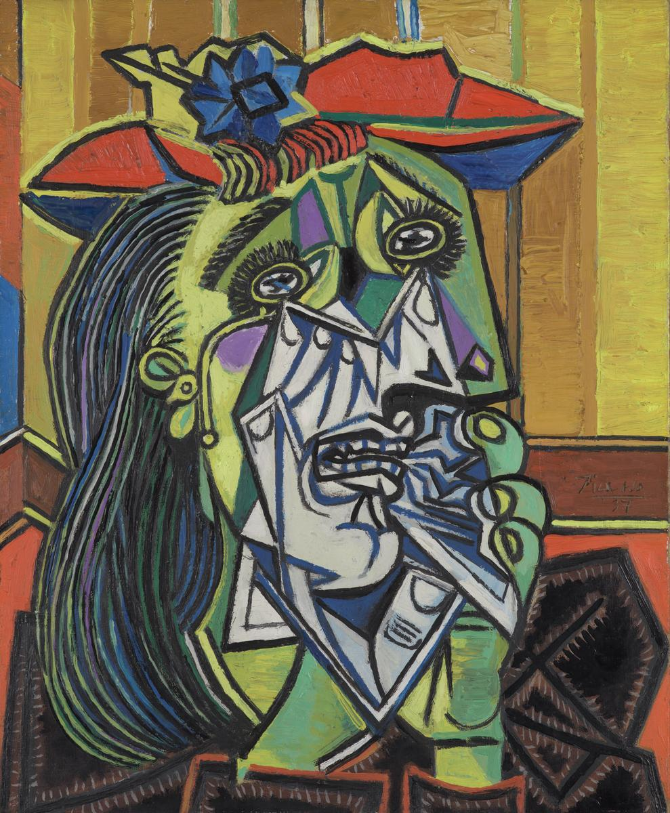

Exhibitions
Modernism for a New Millennium, Sam Cintron Gallery, Jersey City, New Jersey, US, January 27–February 27, 2000.


Bipolar Surrealism, Opera Gallery, New York, New York, US, May 24–June 11, 2001.
Literature
Bipolar Surrealism (New York: Opera Gallery, 2001), exhibition catalogue.
Ron English, Popaganda: The Art & Subversion of Ron English (San Francisco: Last Gasp, 2001), p. 95. ISBN 1-887128-60-3.

Ron English, Fauxlosophy: The Art of Ron English (San Francisco: Last Gasp, 2016), p. 168. ISBN 978-0867196566.
Provenance
Private collection.
Notes
This work is reproduced in the exhibition catalogue for Bipolar Surrealism.
The work is also documented in an unidentified newspaper clipping for Modernism for a New Millennium at Sam Cintron Gallery in Jersey City, with text noting the exhibition ran through February 27.
Ancillary Documentation
The following materials document exhibition, archival, publication, newspaper, and source-reference material associated with the work.





